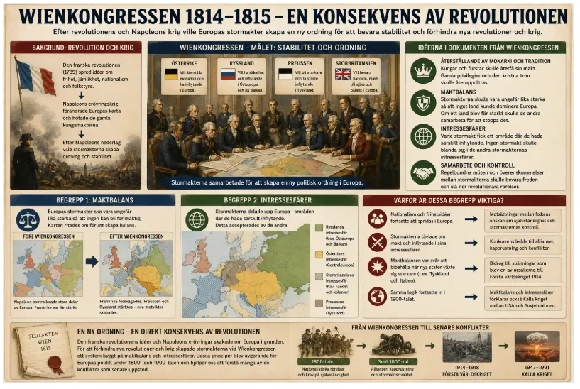
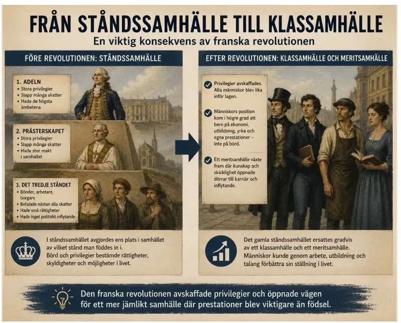
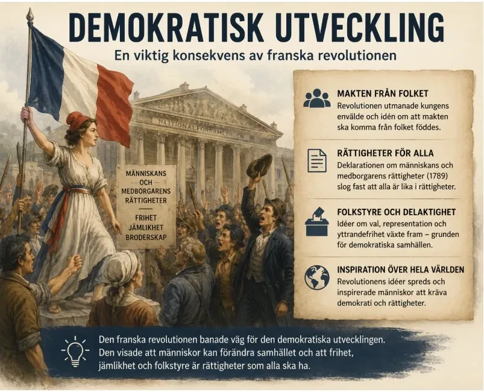
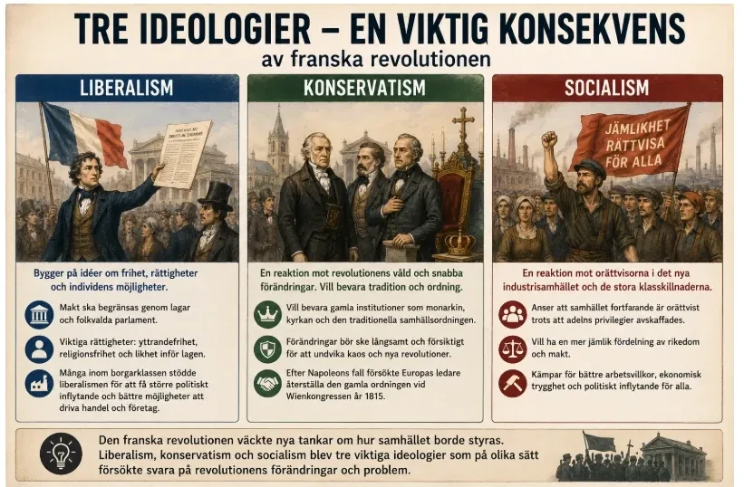
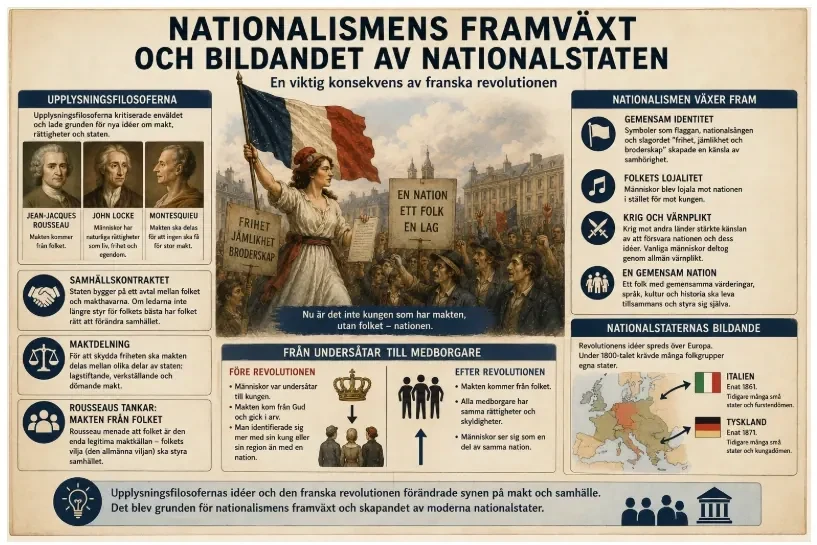
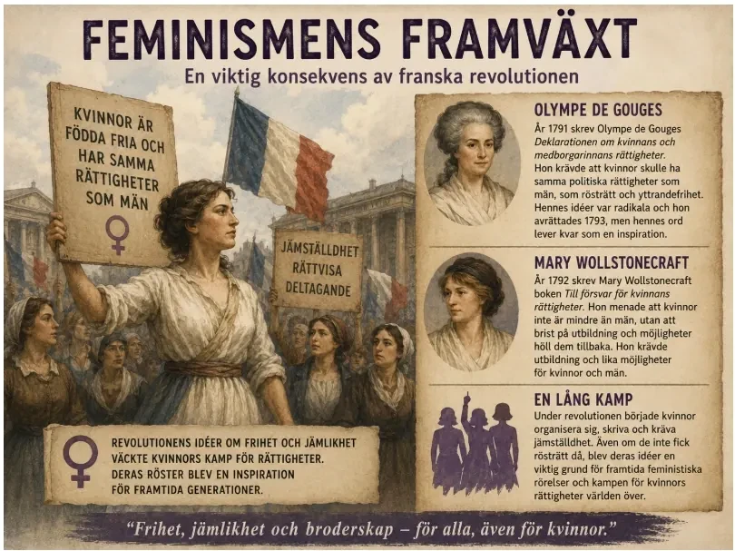

— revolutionens långa skugga: Wienkongressen, klassamhället, ideologierna, nationalismen och feminismen —
Efter Napoleons fall samlades Europas stormakter på Wienkongressen 1815 . Målet var att skapa ordning och hindra nya revolutioner. De använde idén om maktbalans — ingen stat skulle bli så stark att den kunde dominera hela Europa. Kungamakten återställdes i många länder. Men revolutionens idéer kunde inte utplånas.

Ledarna på Wienkongressen var rädda för revolutionens idéer om nationalism, folkstyre och frihet eftersom de ansåg att dessa idéer hotade kungamakten och den gamla samhällsordningen. Därför ville man återställa så mycket som möjligt av det gamla Europa genom att sätta tillbaka kungar och furstar på deras troner. Samtidigt insåg stormakterna att det behövdes ett nytt system för att undvika att ett land blev för mäktigt, som Frankrike hade blivit under Napoleon. Man utgick ifrån idén om maktbalans. Maktbalans innebär att Europas stormakter ska vara ungefär lika starka så att inget land kan dominera hela Europa. Om ett land blev för starkt skulle de andra länderna samarbeta för att stoppa det. För att skapa denna balans ritades Europas karta om. Frankrike försvagades, medan exempelvis Preussen och Ryssland fick större områden för att fungera som motvikter mot andra stormakter. Tanken var att balansen mellan länderna skulle skapa fred och stabilitet.
Ett annat viktigt begrepp som växte fram var intressesfär. En intressesfär är ett område där ett mäktigt land anser sig ha särskilt stort politiskt eller militärt inflytande. Stormakterna accepterade ofta att vissa länder hade rätt att påverka utvecklingen i områden nära deras egna gränser. Ryssland ville exempelvis ha stort inflytande i Östeuropa och på Balkan, medan Storbritannien fokuserade på hav och handel. Dessa intressesfärer blev viktiga eftersom stormakterna började konkurrera om kontroll och inflytande över olika områden.
Både maktbalans och intressesfärer blev mycket betydelsefulla för Europas fortsatta historia och hjälper till att förklara många senare konflikter. Under 1800-talet och början av 1900-talet skapade nationalismen och kampen om olika intressesfärer motsättningar mellan stormakterna. Konkurrensen om makt och inflytande bidrog till allianser, kapprustning och konflikter som till slut blev en av orsakerna till Första världskriget . Även senare konflikter, som Kalla kriget , kan förstås genom tankarna om maktbalans och intressesfärer där stormakter försökte hindra varandra från att bli för dominerande.
På så sätt blev Wienkongressen och dess idéer en direkt konsekvens av den franska revolutionen. Revolutionens och Napoleons omvälvningar tvingade Europas ledare att skapa ett nytt politiskt system som skulle bevara stabilitet, kontrollera revolutionära idéer och hålla balansen mellan stormakterna.
När Napoleon slutligen besegrats — först 1814, sedan definitivt vid Waterloo i juni 1815 — samlades Europas segrande makter i Wien för att städa upp efter ett kvartssekel av revolution och krig. Kongressen pågick från hösten 1814 till sommaren 1815, och den drevs framför allt av den österrikiske utrikesministern Metternich, med den ryske tsaren Alexander I, sändebud från Preussen och Storbritannien och den sluge franske diplomaten Talleyrand runt bordet. Målet var uttalat konservativt: att återställa så mycket som möjligt av den ordning som funnits före 1789.
Två principer styrde arbetet. Den ena var legitimitet — tanken att de gamla, "rättmätiga" kungahusen skulle sättas tillbaka på sina troner, som ätten Bourbon i Frankrike. Den andra var maktbalans — att ingen enskild stat skulle tillåtas bli så mäktig att den kunde behärska hela kontinenten, så som Frankrike gjort under Napoleon.
Rent praktiskt ritade kongressen om Europas karta med linjal och förhandling snarare än med hänsyn till folkens vilja. Runt Frankrike byggdes starkare grannstater som buffertar: i norr slogs Nederländerna och Belgien ihop till ett kungarike, och i söder stärktes kungadömet Sardinien-Piemonte. Preussen och Österrike växte, Ryssland fick kontroll över större delen av Polen, och de många tyska småstaterna samlades löst i ett Tyskt förbund. För att vakta ordningen bildade dessutom Ryssland, Österrike och Preussen den "heliga alliansen", och stormakterna kom överens om att mötas regelbundet för att lösa kriser tillsammans — ett system som brukar kallas "den europeiska konserten". På den punkten lyckades kongressen förbluffande väl: Europa slapp ett allmänt storkrig i nästan hundra år, ända fram till 1914.
Det var på sätt och vis historiens första försök att organisera freden mellan stater. I stället för att låta varje land sköta sig självt skulle stormakterna mötas i återkommande kongresser — Aachen 1818, Troppau 1820, Verona 1822 — och gemensamt bestämma hur kriser och uppror skulle hanteras. Tanken att stormakter har ett delat ansvar för ordningen levde sedan vidare långt in på 1900-talet, ända fram till Nationernas förbund och FN. Men systemet hade en mörk baksida: i praktiken användes det ofta för att med vapenmakt slå ner just de frihetsrörelser som revolutionen inspirerat.
Men i sitt djupaste syfte misslyckades Wienkongressen, och det är den insikten som gör den värd att förstå. Man kan flytta gränser och återinsätta furstar, men man kan inte kalla tillbaka idéer som redan spritts till miljontals människor. Tankarna om folkets rättigheter, om likhet inför lagen och om konstitutioner — arvet från upplysningen och revolutionen — hade satt sig för djupt för att raderas med ett fördrag. Metternichs system byggde därför på en olöslig spänning: det försökte frysa en kontinent som redan börjat röra sig. Kongressen behandlade dessutom nationalismen och kravet på folkstyre inte som krafter att ta hänsyn till, utan som hot att hålla nere med censur och polis.
Följden blev att hela 1800-talet präglades av en dragkamp mellan den återställda ordningen och de krafter revolutionen släppt lös. Gång på gång bröt nya revolutioner ut. År 1830 störtades ätten Bourbon på nytt i Paris och Belgien bröt sig loss, och framför allt under "folkens vår" 1848 svepte en våg av uppror genom nästan hela Europa på en gång — då tvingades till och med Metternich själv att fly från Wien.
Wienkongressen var alltså inte punktslutet på revolutionernas tid, utan inledningen till ett sekel där det gamla och det nya drabbade samman om och om igen. De gamla makthavarna hade vunnit kriget mot Napoleon på slagfältet. Kriget mot hans — och revolutionens — idéer förlorade de långsamt, årtionde för årtionde, tills de flesta av Europas gamla envälden till sist ändå hade fallit.
Revolutionen avskaffade många av adelns och kyrkans privilegier. Tanken att lagen ska gälla lika för alla — oavsett börd — fick fäste. Det gamla bördssamhället försvagades. I stället växte ett klassamhälle fram där pengar, utbildning och yrke spelade större roll. Revolutionen bidrog också till idén om meritsamhället — att karriär ska vara möjlig för den som är skicklig, inte bara för den som föddes rätt.

En annan viktig konsekvens av den franska revolutionen var att det gamla ståndssamhället började försvinna och gradvis ersättas av ett klassamhälle och ett mer meritbaserat samhälle . Före revolutionen var Frankrike indelat i olika stånd: adel, präster och det tredje ståndet som bestod av bönder, arbetare och borgare. Vilket stånd man föddes in i avgjorde vilka rättigheter, skyldigheter och möjligheter man hade i livet. Adeln och prästerna hade stora privilegier, exempelvis lägre skatt och tillgång till höga ämbeten, medan vanliga människor hade få möjligheter att påverka sin situation. Samhället byggde alltså på börd — vem man var född till.
Under revolutionen avskaffades många av dessa privilegier. Nationalförsamlingen beslutade att adelns och prästerskapets särskilda rättigheter skulle tas bort och att alla människor skulle vara lika inför lagen. Detta innebar att det gamla ståndssamhället började brytas ned. Istället växte ett klassamhälle fram där människors position i samhället allt mer kom att bero på ekonomi, utbildning och yrke snarare än vilket stånd de föddes in i.
Samtidigt började tanken om ett meritsamhälle växa fram. Med det menas att människor ska kunna nå framgång genom sina kunskaper, prestationer och arbete istället för genom sin släktbakgrund. Under Napoleon blev detta tydligt då många militära och administrativa tjänster började tillsättas efter skicklighet och kompetens. Borgarklassen, som tidigare haft begränsat politiskt inflytande trots sin rikedom och utbildning, fick nu större möjligheter att påverka samhället.
Förändringen skedde inte över en natt och stora sociala skillnader fanns fortfarande kvar. Men revolutionen markerade början på en lång utveckling där gamla bördssamhällen med privilegier gradvis ersattes av samhällen där utbildning, yrke och prestation fick större betydelse. På så sätt blev den franska revolutionen en viktig grund för det moderna samhällets syn på jämlikhet och möjligheter .
En av revolutionens mest bestående följder var att den slog sönder själva grundprincipen för hur samhället var ordnat — men, och det är poängen, den avskaffade inte ojämlikheten, den förvandlade den. Det gamla Frankrike hade varit ett ståndssamhälle, där en människas plats bestämdes av börd: man föddes till präst, adel eller tredje stånd, och där låg man fast livet ut, oavsett förmåga. Natten till den 4 augusti 1789 avskaffade nationalförsamlingen i ett svep de feodala privilegierna, och genom deklarationen om människans rättigheter ersattes ståndsordningen med principen om likhet inför lagen.
I stället trädde ett klassamhälle fram, där ställningen avgjordes mindre av födsel och mer av ekonomi — av ägande, kapital och yrke. De stora vinnarna var borgerskapet, den grupp som drivit revolutionen. En köpman, fabrikör eller advokat kunde nu stiga socialt genom förmögenhet och skicklighet, utan att stoppas av ett osynligt börds-tak. Det var precis den frihet det bildade, ambitiösa borgerskapet stridit för. Samtidigt öppnade avskaffandet av de gamla skråna — genom Le Chapelier-lagen 1791 — vägen för en friare ekonomi, där kapital kunde investeras och företag byggas på ett nytt sätt. Samma lag förbjöd dock även arbetarnas egna sammanslutningar, vilket säger något om vems frihet det egentligen handlade om.
Idén om ett meritsamhälle — att den skickliga ska belönas, inte den välborna — sattes tydligast i system under Napoleon. Hans devis om "karriären öppen för talangen" innebar att ämbeten och officersgrader kunde tillsättas efter duglighet, och hans lagbok, Code Napoléon från 1804, spred den borgerliga äganderätten och den formella likheten inför lagen till stora delar av Europa. På så vis levde revolutionens sociala omvälvning vidare långt efter att revolutionen själv var död.
Men en ny skiljelinje ersatte den gamla, och den skulle prägla hela den kommande epoken: klyftan mellan dem som ägde — fabrikörer och kapitalägare — och dem som bara hade sin arbetskraft att sälja, den snabbt växande gruppen arbetare. När den industriella revolutionen tog fart under 1800-talet flyttade miljoner människor till städerna och arbetade under hårda villkor i fabriker som ägdes av ett fåtal. Just den motsättningen — mellan kapital och arbete — blev tidens stora sociala fråga. Ur den föddes både arbetarrörelsen och den socialistiska kritiken, och 1848 formulerade Karl Marx och Friedrich Engels i Kommunistiska manifestet tanken att hela historien var en kamp mellan samhällsklasser.
Man ska samtidigt vara noga med vad likheten inför lagen faktiskt betydde. På papperet var alla medborgare lika — i verkligheten stod en fabriksägare och en tolvårig fabriksarbetare oändligt långt ifrån varandra. Den formella friheten att sälja sin arbetskraft var för många ingen frihet alls, utan tvånget att arbeta tolv timmar om dygnet för en svältlön. Klassamhället gav alltså med ena handen en möjlighet till uppstigande som ståndssamhället aldrig känt, och tog med den andra ifrån de egendomslösa nästan allt skydd. Just den spänningen — mellan löftet om likhet och verkligheten av djup ojämlikhet — är det som gör 1800-talet till arbetarrörelsens och socialismens århundrade.
Det är därför övergången från stånd till klass är så viktig att förstå: den är själva bryggan mellan den gamla världen och den moderna. Revolutionen hade inte skapat jämlikhet, men den hade rivit ner den fasta, gudagivna ordning där din plats var bestämd redan vid födseln, och ersatt den med ett samhälle i rörelse, där pengar kunde göra det börd tidigare gjort — på gott och ont. Och den nya ojämlikhet den skapade skulle bli själva utgångspunkten för nästa stora epok i din historiebok: den industriella revolutionen.
Revolutionen visade att folket kunde kräva rättigheter och begränsa kungens makt. Viktiga idéer var folksuveränitet (makten kommer från folket), yttrandefrihet , religionsfrihet och maktdelning . Frankrike skapade ingen färdig demokrati — kvinnor och fattiga män fick fortfarande lite makt. Men revolutionen visade vad som var möjligt.

Den franska revolutionen fick stora konsekvenser för Europas och världens politiska utveckling. En av de viktigaste konsekvenserna var att idéer om demokrati började spridas på allvar. Före revolutionen styrdes Frankrike av en kung med nästan obegränsad makt. Samhället byggde på ståndssamhället där adel och präster hade stora privilegier, medan vanliga människor hade mycket litet inflytande. Revolutionen utmanade denna ordning och byggde istället på tanken att makten skulle komma från folket.
Bakom många av revolutionens idéer stod upplysningsfilosoferna . Dessa tänkare kritiserade enväldet och menade att människor hade naturliga rättigheter som staten måste respektera. Jean-Jacques Rousseau utvecklade tanken om samhällskontraktet . Han menade att samhället bygger på ett slags avtal mellan folket och staten. Makthavarna ska styra för folkets bästa, och om de missbrukar sin makt har folket rätt att förändra samhället. Rousseau betonade därför folksuveränitet — alltså att makten egentligen kommer från folket och inte från Gud eller en kung.
Även Voltaire påverkade revolutionens idéer. Han kämpade för yttrandefrihet, religionsfrihet och människors rätt att tänka och uttrycka sina åsikter fritt utan att straffas av staten eller kyrkan. Voltaire kritiserade också kyrkans och kungarnas stora makt och menade att samhället behövde bli mer tolerant och rättvist.
En annan viktig upplysningsfilosof var Montesquieu som utvecklade idén om maktdelning . Han ansåg att makten i staten skulle delas upp mellan olika delar — lagstiftande, verkställande och dömande makt — för att förhindra att en person eller grupp fick för stor makt. Genom att makten kontrollerade sig själv skulle människors frihet skyddas bättre. Denna idé blev senare en viktig grund för moderna demokratier.
Under revolutionen antogs också Deklarationen om människans och medborgarens rättigheter år 1789. Där fastslogs att alla människor är födda fria och lika i rättigheter. Dokumentet betonade bland annat yttrandefrihet, likhet inför lagen och att makten skulle utgå från nationen och folket. Även om revolutionen inte direkt skapade en stabil demokrati visade den att människor kunde göra uppror mot envälde och kräva politiskt inflytande.
Revolutionens idéer spreds sedan vidare över Europa och världen genom krig, böcker och politiska rörelser. Fler människor började kräva grundlagar, folkvalda parlament och större rättigheter för medborgarna. Under 1800-talet bidrog detta till demokratiska reformer där kungars makt begränsades och fler människor fick rösträtt. På längre sikt blev därför den franska revolutionen och upplysningens idéer en viktig grund för dagens demokratiska samhällen.
Kanske den mäktigaste konsekvensen av alla var att vissa idéer, efter revolutionen, aldrig mer gick att helt tysta. Före 1789 hade tanken att makten borde komma från folket, att människor har rättigheter oberoende av kung och kyrka, och att ett land bör styras efter en författning, i huvudsak varit just tankar — upplysningsfilosofernas idéer. Locke hade hävdat att makten vilar på folkets samtycke, Montesquieu krävt maktdelning och Rousseau, i Samhällskontraktet 1762, formulerat läran om folksuveränitet. Men det var idéer, prövade på sin höjd i det avlägsna Amerika. Efter revolutionen var de en levande politisk kraft mitt i Europa, med ett konkret och dramatiskt exempel att peka på.
Det avgörande var att revolutionen gett dessa idéer både ett språk och en förebild. Deklarationen om människans och medborgarens rättigheter, antagen i augusti 1789, blev en text som människor i hela världen kunde läsa, citera och kräva att den skulle gälla också dem. Dess första ord — att människor föds och förblir fria och lika i rättigheter — var så tydliga och så allmänt hållna att de gick att vända mot vilken orättvisa som helst.
Det starkaste exemplet kom nästan omedelbart, och på en plats revolutionärerna själva helst inte tänkte på: den franska sockerkolonin Saint-Domingue. Där reste sig de förslavade 1791 och krävde att deklarationens ord skulle gälla även dem. Under Toussaint Louverture besegrade de först den franska armén — och när Napoleon försökte återinföra slaveriet, som han gjorde 1802, besegrade de även honom. År 1804 utropades Haiti som självständig stat, den första i historien född ur ett slavuppror. Revolutionens ord om frihet hade tagits på orden av just de människor Frankrike aldrig menat att befria, och slaverifrågan skulle förbli en öppen anklagelse mot hela upplysningens jämlikhetstanke.
Haiti var det tydligaste, men långt ifrån det enda exemplet. Under 1800-talet återvände rörelse efter rörelse till just revolutionens ord: de brittiska och franska slaverimotståndare som steg för steg drev igenom slaveriets avskaffande, de som krävde rösträtt åt egendomslösa män, och långt senare de koloniserade folk i Asien och Afrika som mot sina europeiska herrar riktade européernas egna högtidliga deklarationer om frihet och likhet. Formuleringen att människan föds fri var så enkel och så generell att den omöjligt kunde begränsas till dem som först skrev ner den — den läckte, så att säga, ut ur revolutionärernas händer och ut i världen.
Man ska dock inte tro att demokratin infördes över en natt; tvärtom var vägen lång och kantad av bakslag. Allmän och lika rösträtt, även bara för män, dröjde i de flesta länder ända in på 1800- eller 1900-talet — i Frankrike infördes den för män 1848, i Sverige först kring 1920 — och för kvinnor ännu längre. Revolutionen hade inte förverkligat folkstyret; den hade gjort det tänkbart. Och det är en större sak än den låter. Envälde av Guds nåde, som i tusen år framstått som den självklara, naturliga ordningen, framstod efter revolutionen för allt fler som något människor själva skapat — och därför kunde göra om.
Det är just den förskjutningen som gör att franska revolutionen brukar räknas som början på den moderna politiska historien. Efter 1789 blev det normala att fråga: med vilken rätt styr de som styr? Varje kung, kejsare och regering måste hädanefter, förr eller senare, förhålla sig till kravet att makten ska kunna rättfärdigas inför folket. Revolutionen vann inte demokratin, men den ställde den fråga som demokratins hela historia sedan dess har handlat om att besvara.
Liberalismen byggde på revolutionens idéer — yttrandefrihet, likhet inför lagen, folkvalda parlament. Konservatismen växte fram som en reaktion: förändringar ska ske långsamt, monarkin och traditionerna bör bevaras. Socialismen växte fram något senare — även om adelns privilegier försvunnit levde många arbetare i fattigdom. Socialister ville minska klyftorna och förbättra arbetarnas villkor.

Den franska revolutionen ledde också till att flera nya politiska ideologier växte fram eller utvecklades vidare. När det gamla samhället med kungligt envälde och adelns privilegier började brytas ned uppstod stora diskussioner om hur samhället egentligen borde styras. Under 1800-talet blev därför liberalism, konservatism och socialism tre viktiga ideologier som på olika sätt försökte svara på revolutionens förändringar och problem.
Liberalismen hämtade många av sina idéer från upplysningen och revolutionen. Liberalerna ville att människor skulle ha större frihet och rättigheter. De ansåg att makten skulle begränsas genom grundlagar och folkvalda parlament istället för att ligga hos enväldiga kungar. Yttrandefrihet, religionsfrihet och likhet inför lagen blev viktiga liberala idéer. Många inom borgarklassen stödde liberalismen eftersom de ville ha större politiskt inflytande och bättre möjligheter att bedriva handel och företagande utan statliga hinder.
Konservatismen växte fram som en reaktion mot revolutionens våld och snabba förändringar. Många konservativa ansåg att revolutionen hade skapat kaos och förstört viktiga traditioner i samhället. Därför ville de bevara gamla institutioner som monarkin, kyrkan och samhällsordningen. Konservativa menade att förändringar skulle ske långsamt och försiktigt för att undvika nya revolutioner och konflikter. Efter Napoleons fall försökte Europas kungar och ledare återställa mycket av den gamla ordningen vid Wienkongressen år 1815.
Socialismen utvecklades senare under 1800-talet som en reaktion mot de stora sociala skillnader som uppstod i det nya industrisamhället. Trots att revolutionen hade avskaffat adelns privilegier levde många arbetare fortfarande i fattigdom medan fabriksägare och borgare blev rikare. Socialister ansåg därför att samhället fortfarande var orättvist och att rikedomar och makt borde fördelas mer jämlikt. De ville förbättra arbetarnas villkor och ge fler människor ekonomisk trygghet och politiskt inflytande.
På så sätt blev den franska revolutionen startpunkten för flera av de ideologier som kom att prägla Europas politik under 1800- och 1900-talet. Diskussionerna om frihet, jämlikhet, tradition och rättvisa som började under revolutionen fortsätter att påverka politiken än idag.
Ett av de mest fascinerande arven efter revolutionen är att den födde det moderna politiska landskapet självt. När människor skulle förhålla sig till det som hänt — var revolutionen ett framsteg eller en katastrof, gick den för långt eller inte tillräckligt långt? — kristalliserades svaren till tre stora ideologier som fortfarande formar politiken idag. Att förstå dem som tre olika svar på samma fråga är nyckeln.
Liberalismen tog fasta på revolutionens kärna: individens frihet och rättigheter, likhet inför lagen, yttrandefrihet, äganderätt och en statsmakt som begränsas av en konstitution. Idéerna gick i rakt nedstigande led från upplysningen — från Lockes naturliga rättigheter och Montesquieus maktdelning. Liberalerna ville bevara revolutionens landvinningar men helst utan dess terror och kaos, ungefär det måttfulla, egendomsägande borgerskapet strävat efter. Frihet var för dem det högsta värdet, och de var ofta skeptiska mot en stat som lade sig i för mycket.
Konservatismen växte fram som en direkt reaktion mot revolutionen. Redan 1790, medan revolutionen ännu pågick, varnade britten Edmund Burke i sin bok Reflektioner om revolutionen i Frankrike för att man inte kan riva upp ett helt samhälle efter en ritning utan att det slutar i blod — och terrorn tycktes ge honom rätt. Konservativa betonade i stället tradition, religion, ordning och långsam förändring med respekt för det som vuxit fram över tid. Där liberalen såg befrielse i att bryta med det gamla, såg konservativen fara. Det var denna hållning som styrde Metternich och Wienkongressen.
Socialismen, slutligen, menade att revolutionen inte gått tillräckligt långt. Den hade gett politisk frihet och likhet inför lagen — men lämnat den ekonomiska ojämlikheten orörd. De fattiga var fortfarande fattiga; nu styrdes de bara av rika borgare i stället för av adel. Tidiga socialister ville därför föra kampen mot ojämlikheten vidare till det ekonomiska planet, och 1848 gick Karl Marx och Friedrich Engels längst av alla: i Kommunistiska manifestet krävde de att själva klassamhället skulle avskaffas.
Under 1800-talet gick de tre riktningarna i närkamp med varandra på Europas gator och i dess parlament. Liberaler och nationalister reste sig tillsammans under folkens vår 1848 och krävde grundlagar och folkstyre; konservativa furstar slog ned upproren och försökte hålla fast vid den gamla ordningen; och ur arbetarnas växande missnöje byggdes fackföreningar och socialistiska partier som skulle bli en huvudkraft under 1900-talet. Ideologierna var alltså aldrig bara idéer i böcker — de blev partier, rörelser och regeringar som stred på riktigt om hur det nya samhället skulle se ut, och gränserna mellan dem kunde vara flytande: en och samma person kunde vara liberal i ekonomin och konservativ i synen på kyrkan.
Det verkligt slående är att alla tre är svar på en och samma händelse, och att de fortfarande strukturerar vår politik. Till och med orden höger och vänster kommer härifrån — från var man satt i den franska nationalförsamlingen 1789, med revolutionens försvarare till vänster och kungamaktens anhängare till höger om talmannen. Den placeringen blev en vana, sedan en symbol, och till slut det ord vi ännu använder för att beskriva en hel politisk skala. Revolutionen gav alltså inte bara nya lagar och gränser, utan själva ramverket och ordförrådet för hur vi än idag argumenterar om hur ett samhälle bör styras. När du hör orden liberal, konservativ och socialist i nyheterna hör du med andra ord ekot av en diskussion som började i Paris för över tvåhundra år sedan — och som ännu inte är avslutad.
När fransmän gått samman för att försvara sin revolution och sin nation väcktes en ny känsla av nationalism — stark samhörighet med sitt folk, språk och land. När Napoleon sedan ockuperade andra länder spred han både revolutionens idéer och nationalism bland dem han erövrade. Många folk i Europa började vilja bilda egna nationalstater.

Den franska revolutionen bidrog också till framväxten av nationalism och skapandet av nationalstater . Före revolutionen såg många människor sig främst som undersåtar till en kung och inte som medlemmar av en nation . Frankrike styrdes genom envälde där kungen ansågs ha fått sin makt från Gud. Revolutionen förändrade detta synsätt genom att idéer från upplysningsfilosoferna började få större betydelse. Filosofer som Jean-Jacques Rousseau, John Locke och Montesquieu kritiserade det gamla samhället och menade att makten borde begränsas och utgå från folket.
Rousseau utvecklade tanken om samhällskontraktet. Han menade att staten bygger på ett slags avtal mellan folket och makthavarna. Om ledarna inte längre styr för folkets bästa har folket rätt att förändra samhället. Därför blev idén om folksuveränitet — att makten kommer från folket — mycket viktig under revolutionen. Montesquieu betonade istället maktdelning , alltså att makten ska delas mellan olika delar av staten för att ingen person ska få för stor makt. Dessa idéer blev grunden för moderna demokratiska nationalstater.
Under revolutionen började människor också känna en starkare gemenskap med nationen. Symboler som den franska flaggan, nationalsången och slagordet "frihet, jämlikhet och broderskap" hjälpte till att skapa en nationell identitet. Medborgarna började se sig som en del av samma folk med gemensamma rättigheter och skyldigheter. När Frankrike senare hamnade i krig mot andra europeiska länder stärktes nationalismen ytterligare eftersom många ansåg att de försvarade både revolutionen och nationen.
Revolutionens idéer spreds sedan över Europa. Många folkgrupper började kräva egna nationalstater där människor med samma språk, kultur och historia skulle leva tillsammans och styra sig själva. Under 1800-talet bidrog nationalismen till att exempelvis Italien och Tyskland enades till egna stater. På så sätt blev den franska revolutionen en viktig grund för både nationalismens framväxt och skapandet av moderna nationalstater där makten skulle bygga på folkets vilja snarare än på kungars arvsrätt.
Före revolutionen var en vanlig människas främsta lojalitet oftast lokal — mot byn, mot godsherren, mot socknen — eller riktad uppåt mot kungen som person. Tanken att man i första hand tillhörde en nation, ett folk med gemensamt språk, historia och öde, var långt ifrån självklar. Revolutionen förändrade det i grunden och gav upphov till en av de följande två århundradenas mäktigaste krafter: nationalismen.
Det skedde på två sätt, som förstärkte varandra. Först genom revolutionen själv. När makten skulle komma från "folket" och "nationen" i stället för från kungen, blev nationen plötsligt det som människor skulle känna samhörighet med, rösta i namn av och ytterst offra sig för. När revolutionens Frankrike angreps av utländska arméer infördes 1793 massutskrivning — levée en masse — och för första gången kallades ett helt folk till vapen för att försvara sitt land, inte kungens. Den vanlige soldaten var inte längre en legoknekt utan en medborgare med ett fosterland. Nationen beväpnades, och en ny sorts känsla föddes: att dö för Frankrike var att dö för något som var ens eget.
Sedan spreds den paradoxalt nog av Napoleon. När hans franska arméer erövrade och ockuperade andra länder väckte de motstånd — och det motståndet göt samman splittrade befolkningar till nya nationella "vi". I Spanien reste sig folket 1808 i ett hårdnackat gerillakrig mot de franska inkräktarna. I de tyska staterna manade filosofen Fichte samma år, i sina Tal till den tyska nationen, tyskarna att se sig som ett enda folk. Tyskar, spanjorer och italienare började känna sig just som tyskar, spanjorer och italienare, i motsättning till fransmännen. Revolutionens och Napoleons universella idéer födde alltså sin egen motkraft: den nationella identiteten.
Vid sidan av politiken fick nationalismen också en kulturell sida. Lärda män började samla in folksagor, teckna ned folkvisor och skriva sitt lands historia för att visa att nationen hade en egen själ och ett eget förflutet — bröderna Grimms sagosamlingar i Tyskland är ett berömt exempel. Språket blev nationens kännetecken: att tala tyska, italienska eller polska blev ett sätt att säga vem man var. På så vis förvandlades nationen från en abstrakt politisk idé till en känsla av gemenskap som vanliga människor bar med sig i vardagen, i sånger, skolböcker och flaggor.
Följderna blev enorma och djupt tvetydiga. Å ena sidan drev nationalismen fram enandet av tidigare splittrade länder: Italien blev en enad nationalstat 1861 och Tyskland 1871, och koloniserade folk fick ett språk för att kräva sin självständighet. Samma kraft kunde dessutom både ena och slita sönder: där den svetsade samman splittrade tyska och italienska stater till nya nationer, sprängde den i stället de gamla mångnationella imperierna — det habsburgska Österrike och det osmanska riket — där en enda krona härskade över en mängd folk som nu vaknade och krävde sitt eget. Redan under folkens vår 1848 restes sådana krav över hela kontinenten. Å andra sidan kunde samma kraft vändas till aggressiv stormaktspolitik, till föreställningar om det egna folkets överlägsenhet, och i förlängningen till 1900-talets fruktansvärda nationalistiska krig, ända fram till andra världskriget.
Nationalismen är därför ett av revolutionens mest dubbelbottnade arv: samtidigt en frigörande kraft som gav folk rätten att styra sig själva, och en farlig kraft som kunde ställa folk mot folk. Samma känsla som fick en förtryckt befolkning att resa sig mot en kejsare kunde nästa sekel få en stormakt att marschera mot sina grannar. Att förstå den dubbelheten — att nationalismen kan befria och förslava med samma glöd — är att förstå mycket av den moderna världens historia, och en stor del av det som väntar dig i de kapitel som kommer.
Revolutionen talade om frihet och jämlikhet — men i praktiken gällde det mest män. Kvinnor fick inte rösträtt. Det förmådde Olympe de Gouges att 1791 skriva Deklarationen om kvinnans och medborgarinnans rättigheter , där hon krävde samma rättigheter för kvinnor. Brittiskan Mary Wollstonecraft krävde kvinnors rätt till utbildning. Ingen av dem fick se sina krav uppfyllda under sin livstid — men de lade grunden för feminismens utveckling.

Den franska revolutionen bidrog också till framväxten av feminismen och kampen för kvinnors rättigheter. Revolutionen byggde på idéer om frihet, jämlikhet och mänskliga rättigheter, men i praktiken var det främst män som fick del av de nya rättigheterna. Många kvinnor började därför fråga sig varför inte även de skulle räknas som fullvärdiga medborgare med rätt att påverka samhället. På så sätt väckte revolutionen nya tankar om jämställdhet mellan kvinnor och män.
En av de viktigaste personerna var Olympe de Gouges . År 1791 skrev hon Deklarationen om kvinnans och medborgarinnans rättigheter som en protest mot att kvinnor uteslöts från revolutionens rättigheter. Hon argumenterade för att kvinnor skulle ha samma politiska rättigheter som män, exempelvis rösträtt, yttrandefrihet och möjlighet att delta i samhällslivet. Hon kritiserade också dubbelmoralen i ett samhälle som talade om jämlikhet men samtidigt förnekade kvinnor inflytande. Hennes idéer uppfattades som radikala och hon avrättades senare under skräckväldet, men hennes texter blev en viktig inspirationskälla för framtida kvinnorättsrörelser.
Även Mary Wollstonecraft spelade en stor roll för feminismens utveckling. Inspirerad av revolutionens idéer skrev hon år 1792 boken Till försvar för kvinnans rättigheter . Där argumenterade hon för att kvinnor inte var mindre intelligenta än män utan att deras underordning berodde på bristande utbildning och möjligheter. Wollstonecraft ansåg att kvinnor borde få utbildning och samma chans att utvecklas som män. Hennes idéer blev mycket betydelsefulla för senare feministiska rörelser.
Även om kvinnor inte fick fulla rättigheter under den franska revolutionen blev revolutionen ändå en viktig startpunkt för feminismens utveckling. För första gången började kvinnor i större skala organisera sig politiskt, skriva krav på jämställdhet och utmana gamla könsroller. Under 1800- och 1900-talet inspirerades många kvinnorättskämpar av idéerna från Olympe de Gouges och Mary Wollstonecraft när de kämpade för rösträtt, utbildning och lika rättigheter. På så sätt blev den franska revolutionen en viktig del av feminismens historia och utveckling.
Från ett ståndssamhälle med envälde — till en värld där människor reser sig och kräver rättigheter, demokrati, nationalstater och jämställdhet. Den franska revolutionen är inte bara en historisk händelse. Den är en startpunkt för det moderna samhälle vi lever i. När du nu går till Steg 3 — fundera på vilka av dessa långa linjer som påverkar dig mest i dag.
Franska revolutionen proklamerade högtidligt människans och medborgarens rättigheter — men drog i praktiken en tyst gräns vid kön. Kvinnor deltog aktivt i revolutionen: i oktober 1789 marscherade tusentals kvinnor till Versailles och tvingade kungafamiljen tillbaka till Paris, de demonstrerade mot brödpriser, de organiserade sig i egna politiska klubbar. Ändå förvägrades de rösträtt, uteslöts från de politiska församlingarna och räknades i 1791 års författning uttryckligen som "passiva" medborgare — människor med vissa juridiska rättigheter men utan politiskt inflytande. Just den motsägelsen — löftet om universella rättigheter mot verkligheten av kvinnors uteslutning — blev fröet till något som skulle växa i mer än ett sekel: feminismen.
Redan under revolutionen formulerades kritiken skarpt och medvetet. Olympe de Gouges skrev 1791 sin Deklaration om kvinnans och medborgarinnans rättigheter, punkt för punkt formad som ett svar på den manliga revolutionens deklaration. Hennes logik var omöjlig att vederlägga inom revolutionens egna principer: om alla människor har lika rättigheter, med vilken rätt utesluts då hälften av dem? I England hade Mary Wollstonecraft samtidigt, i Till försvar för kvinnans rättigheter 1792, vänt upplysningens idéer om förnuft och utbildning mot kvinnors underordning — hon menade att kvinnor inte var mindre begåvade än män, utan sämre utbildade. Båda gjorde samma sak: de tog tidens finaste ord på allvar och krävde att de skulle gälla alla.
I sin egen tid förlorade de. Kvinnornas politiska klubbar förbjöds hösten 1793, samma år som Olympe de Gouges fördes till giljotinen — anklagad, bland annat, för att ha blandat sig i det som ansågs vara männens angelägenheter. Och när Napoleon senare stiftade sin lagbok, Code Napoléon 1804, cementerades mannens makt: en gift kvinna ställdes juridiskt under sin man, ungefär som ett barn. Revolutionen tystade alltså de kvinnor som krävde sina rättigheter.
Att kvinnornas och de förslavades kamp så ofta löpte parallellt var ingen tillfällighet. Båda grupperna byggde sina krav på exakt samma princip — att alla människor är lika i värde — och båda möttes av samma invändning: att just de av naturen hörde till en lägre ordning och därför inte omfattades av orden. Det är därför det inte är en slump att flera av de kvinnor som samlades i Seneca Falls 1848 också var slaverimotståndare, eller att argumenten för kvinnors och för svartas rättigheter gång på gång lånade ord av varandra genom hela 1800-talet. Samma logik som en gång sprängt ståndssamhället visade sig svår att hejda: när den väl släppts lös sökte den sig till varje grupp som uteslutits.
Men — och detta är hela poängen — frågan gick inte att ta tillbaka när den väl var ställd. Under 1800- och 1900-talen plockade kvinnorörelser i land efter land upp exakt det argument som formulerats under revolutionen. När kvinnor och slaverimotståndare samlades i Seneca Falls i USA 1848 skrev de en egen rättighetsförklaring, medvetet formad efter 1789 års förebild. Suffragetterna krävde rösträtten på gatorna, och steg för steg föll spärrarna — franska kvinnor fick till exempel rösta först 1944, mer än halvtannat sekel efter de Gouges.
Här sluts en av de viktigaste cirklarna i hela revolutionernas tid. Samma princip om allas lika värde som du mötte hos upplysningens filosofer — en princip som i praktiken uteslöt kvinnor, förslavade och koloniserade folk — blev till slut det verktyg med vilket just de uteslutna kunde kräva sin plats. Revolutionens djupaste arv var kanske inte de rättigheter den faktiskt gav, utan den princip den formulerade: att alla människor är lika i värde och rättigheter. Den principen visade sig vara starkare, och farligare för all orättvisa, än de människor som först skrev ner den. Och därför fortsatte den att spränga gränser långt efter att revolutionen själv var över — ända in i vår egen tid.